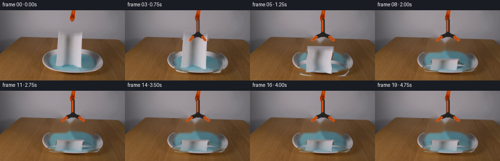
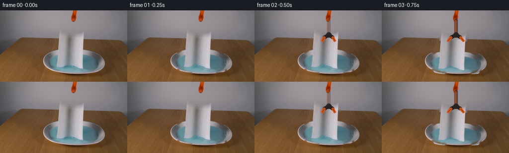

CODING AGENTS AS PIXEL WORLD MODELS
traex/GPT-5.6-Sol · 0128
点击播放 · 原生 RGB 像素
逐轮保存的候选
回放视频、检查图与代码变化。
每份候选均可单独播放。实际图片检查记录在下方工具轨迹中。
候选 01播放与检查图
点击播放 · 原生 RGB 像素

展开代码变化
--- 上一保存版本
+++ 本次保存版本
@@ -0,0 +1,155 @@
+from pathlib import Path
+import cv2
+import numpy as np
+from PIL import Image
+import artifact_io
+
+ROOT = Path(__file__).resolve().parent
+src = np.asarray(Image.open(ROOT / "first_frame.png").convert("RGB"), dtype=np.uint8)
+H, W = src.shape[:2]
+Y, X = np.mgrid[:H, :W]
+
+# Isolate the pale, folded paper in the centre. Its lower edge is already
+# silhouetted against the blue water; neutral-colour selection keeps the dish.
+f = src.astype(np.float32)
+R, G, B = f[..., 0], f[..., 1], f[..., 2]
+mean = f.mean(2)
+chrom = f.max(2) - f.min(2)
+left = np.interp(Y, [40, 48, 55, 78, 86, 96, 110, 123],
+ [118, 117, 116, 114, 103, 99, 100, 107])
+right = np.interp(Y, [40, 48, 55, 78, 86, 96, 110, 123],
+ [169, 170, 169, 170, 186, 197, 199, 194])
+region = (Y >= 40) & (Y <= 123) & (X >= left) & (X <= right)
+neutral = chrom < np.where(Y < 88, 42, 48)
+bright = mean > np.where(Y < 88, 104, 77)
+not_water = (B - R) < np.where(Y < 88, 28, 20)
+paper = region & neutral & bright & not_water
+# The central body is a continuous sheet, including its shaded fold.
+paper |= (Y >= 55) & (Y <= 80) & (X >= 117) & (X <= 168)
+# Connect texture islands while retaining the naturally irregular outer edge.
+k3 = np.ones((3, 3), np.uint8)
+paper = cv2.morphologyEx(paper.astype(np.uint8), cv2.MORPH_CLOSE, k3, iterations=1)
+n, labels, stats, _ = cv2.connectedComponentsWithStats(paper, 8)
+kept = np.zeros_like(paper)
+for i in range(1, n):
+ if stats[i, cv2.CC_STAT_AREA] >= 8:
+ kept[labels == i] = 1
+paper = cv2.dilate(kept, np.ones((2, 2), np.uint8), iterations=1)
+alpha0 = cv2.GaussianBlur(paper.astype(np.float32), (0, 0), 0.65)
+alpha0 = np.clip(alpha0, 0, 1)
+
+# Remove the paper once, yielding the locked-off plate and liquid underneath.
+# TELEA borrows the genuine surrounding grain and blue-water colour.
+remove = cv2.dilate((alpha0 > .03).astype(np.uint8), np.ones((5, 5), np.uint8), 2)
+base_bgr = cv2.inpaint(src[..., ::-1], remove * 255, 5, cv2.INPAINT_TELEA)
+base = base_bgr[..., ::-1]
+# Keep distant pixels absolutely unchanged.
+base[remove == 0] = src[remove == 0]
+
+# Object texture as premultiplied colour makes subpixel warps clean.
+obj = src.astype(np.float32)
+
+
+def transform_sheet(top, scale_y, scale_x=1.0, angle=0.0, curl=0.0):
+ """Forward-warp the paper around its top-centre using analytic remaps."""
+ # Affine first, then a small horizontal sinusoidal curl for soft-paper motion.
+ cx, sy0 = 148.0, 42.0
+ th = np.deg2rad(angle)
+ c, s = np.cos(th), np.sin(th)
+ # Map source -> destination with matrix.
+ A = np.array([[scale_x*c, -scale_y*s, cx - scale_x*c*cx + scale_y*s*sy0],
+ [scale_x*s, scale_y*c, top - scale_x*s*cx - scale_y*c*sy0]], np.float32)
+ col = cv2.warpAffine(obj, A, (W, H), flags=cv2.INTER_CUBIC,
+ borderMode=cv2.BORDER_CONSTANT, borderValue=0)
+ a = cv2.warpAffine(alpha0, A, (W, H), flags=cv2.INTER_CUBIC,
+ borderMode=cv2.BORDER_CONSTANT, borderValue=0)
+ if abs(curl) > .01:
+ yy, xx = np.mgrid[:H, :W].astype(np.float32)
+ dx = (curl * np.sin((yy - top) * .17) * np.clip((yy - top) / 35., 0, 1)).astype(np.float32)
+ col = cv2.remap(col, xx - dx, yy, cv2.INTER_CUBIC,
+ borderMode=cv2.BORDER_CONSTANT, borderValue=0)
+ a = cv2.remap(a, xx - dx, yy, cv2.INTER_CUBIC,
+ borderMode=cv2.BORDER_CONSTANT, borderValue=0)
+ return col.astype(np.float32), np.clip(a, 0, 1)
+
+
+def line_aa(im, p1, p2, color, width=1, opacity=1.0):
+ lay = im.copy()
+ cv2.line(lay, tuple(map(int, p1)), tuple(map(int, p2)), color, width, cv2.LINE_AA)
+ return cv2.addWeighted(lay, opacity, im, 1-opacity, 0)
+
+
+def add_grabber(frame, opening):
+ """Orange/black reacher shaft and two jaws opening away from the released sheet."""
+ if opening <= 0: # source appearance remains undisturbed before release
+ return frame
+ out = frame.copy()
+ # Thin lower shaft, largely hidden in frame zero by the held towel.
+ out = line_aa(out, (149, 19), (149, 48), (51, 42, 39), 5, min(1, opening*1.6))
+ out = line_aa(out, (148, 20), (148, 47), (205, 78, 15), 2, min(1, opening*1.4))
+ # Pivot and articulated jaws. Their tips swing laterally, not vertically.
+ cv2.circle(out, (149, 49), 5, (42, 37, 35), -1, cv2.LINE_AA)
+ cv2.circle(out, (148, 48), 2, (224, 92, 20), -1, cv2.LINE_AA)
+ spread = 10 + 12*opening
+ for side in (-1, 1):
+ elbow = (int(149 + side*(7 + 6*opening)), 54)
+ tip = (int(149 + side*spread), 61)
+ out = line_aa(out, (149, 49), elbow, (38, 34, 33), 5, 1)
+ out = line_aa(out, elbow, tip, (220, 84, 16), 4, 1)
+ out = line_aa(out, elbow, tip, (53, 39, 31), 1, .55)
+ return out
+
+
+def ripples(frame, strength, phase):
+ if strength <= 0:
+ return frame
+ overlay = frame.copy()
+ mask = np.zeros((H, W), np.uint8)
+ cv2.ellipse(mask, (150, 109), (50, 18), 0, 0, 360, 255, -1, cv2.LINE_AA)
+ # Two short, expanding reflection arcs, clipped to the liquid ellipse.
+ for j in range(2):
+ rx = 17 + int(phase*8) + 10*j
+ ry = 4 + int(phase*2) + 2*j
+ col = (151, 186, 193) if j == 0 else (58, 103, 116)
+ tmp = np.zeros_like(frame)
+ cv2.ellipse(tmp, (150, 112), (rx, ry), 0, 195, 345, col, 1, cv2.LINE_AA)
+ cv2.ellipse(tmp, (150, 112), (rx, ry), 0, 15, 165, col, 1, cv2.LINE_AA)
+ nz = (tmp.sum(2) > 0) & (mask > 0)
+ overlay[nz] = tmp[nz]
+ return cv2.addWeighted(overlay, min(.55, strength), frame, 1-min(.55, strength), 0)
+
+# Motion is deliberately brief and real-time: jaws open, gravity takes over,
+# then the soft towel buckles and rests on the water for the remainder.
+tops = [42,42,42,47,59,75,89,97,99,100,100,100,100,100,100,100,100,100,100,100]
+scales = [1, 1, 1,.98,.88,.72,.52,.35,.32,.31,.31,.31,.31,.31,.31,.31,.31,.31,.31,.31]
+angles = [0, 0, 0,.3,-.5,.8,-1.0,.6,-.3,.15,0,0,0,0,0,0,0,0,0,0]
+opens = [0, 0,.18,.45,.75,1,1,1,1,1,1,1,1,1,1,1,1,1,1,1]
+
+frames = [src.copy()]
+for i in range(1, 20):
+ frame = base.copy()
+ # Impact ripples precede the towel layer and fade naturally.
+ if i >= 6:
+ age = i - 6
+ frame = ripples(frame, np.exp(-age/4.2), age/4.)
+ sheet, a = transform_sheet(tops[i], scales[i], 1 + .10*max(0, 1-scales[i]),
+ angles[i], curl=1.7*np.exp(-max(0,i-5)/3) if i>=4 else 0)
+ # The lower paper rapidly takes on the water's blue cast after impact.
+ if i >= 6:
+ wet = min(1., (i-5)/5.)
+ yy = np.arange(H, dtype=np.float32)[:,None]
+ wetmap = np.clip((yy - 102)/19, 0, 1)[...,None] * wet
+ water_col = np.array([100, 145, 157], np.float32)
+ sheet = sheet*(1 - .34*wetmap) + water_col*(.34*wetmap)
+ # Damp paper is slightly less brilliant but remains visibly fibrous.
+ sheet *= (1 - .05*wet)
+ aa = a[...,None]
+ frame = np.clip(frame.astype(np.float32)*(1-aa) + sheet*aa, 0, 255).astype(np.uint8)
+ frame = add_grabber(frame, opens[i])
+ frames.append(frame)
+
+frames = np.stack(frames).astype(np.uint8)
+# Contract guard: the first image must be byte-for-byte identical.
+assert np.array_equal(frames[0], src)
+assert frames.shape == (20, 144, 256, 3) and frames.dtype == np.uint8
+artifact_io.save(frames, ROOT)
候选 02播放与检查图
点击播放 · 原生 RGB 像素


展开代码变化
--- 上一保存版本
+++ 本次保存版本
@@ -127,6 +127,11 @@
frames = [src.copy()]
for i in range(1, 20):
+ # A short establishing hold avoids synthetic plate reconstruction before
+ # the operator actually releases the jaws.
+ if i <= 2:
+ frames.append(src.copy())
+ continue
frame = base.copy()
# Impact ripples precede the towel layer and fade naturally.
if i >= 6:
候选 03播放与检查图

可观测工具轨迹
实际执行的命令与返回图片。
命令 1exit 0
/bin/bash -lc "cat prompt.txt && printf '\\n---RULES---\\n' && cat GENERATION_RULES.md"
命令 2exit 127
/bin/bash -lc "find . -maxdepth 2 -type f -printf '%p %s bytes\\n' | sort && file first_frame.png"
命令 3exit 0
/bin/bash -lc "sed -n '1,240p' artifact_io.py"
命令 4exit 0
/bin/bash -lc "python - <<'PY'
from PIL import Image
import numpy as np
im=np.array(Image.open('first_frame.png').convert('RGB'))
print(im.shape, im.dtype)
# global stats quantiles
for c,n in enumerate('RGB'):
print(n, np.percentile(im[:,:,c],[0,1,5,25,50,75,95,99,100]))
# block means 16x12 across 16x12 pixels each, output coarse labels by HSV-ish dominant colors
from collections import Counter
# Common quantized colors
q=(im//16)*16
cnt=Counter(map(tuple,q.reshape(-1,3)))
print('top quantized')
for k,v in cnt.most_common(30): print(k,v)
PY"命令 5exit 0
/bin/bash -lc "python - <<'PY'
import cv2, numpy as np
from PIL import Image
im=cv2.imread('first_frame.png'); rgb=im[:,:,::-1]; hsv=cv2.cvtColor(im,cv2.COLOR_BGR2HSV)
# masks and comps
masks={
'orange': ((hsv[:,:,0]<25)&(hsv[:,:,1]>110)&(hsv[:,:,2]>90)),
'blue': ((rgb[:,:,2]>rgb[:,:,0]*1.15)&(rgb[:,:,2]>rgb[:,:,1]*1.03)&(rgb[:,:,2]>80)),
'cyan': ((hsv[:,:,0]>75)&(hsv[:,:,0]<115)&(hsv[:,:,1]>35)&(hsv[:,:,2]>75)),
'brightneutral': ((hsv[:,:,1]<35)&(hsv[:,:,2]>165)),
'dark': hsv[:,:,2]<70,
'blackish': ((hsv[:,:,2]<100)&(hsv[:,:,1]<80)),
}
for name,m in masks.items():
n,lab,st,cent=cv2.connectedComponentsWithStats(m.astype('uint8'),8)
print('\\n',name,'count',m.sum(),'range', np.where(m)[1].min() if m.any() else '',np.where(m)[1].max() if m.any() else '',np.where(m)[0].min() if m.any() else '',np.where(m)[0].max() if m.any() else '')
comps=sorted([(st[i,4], tuple(st[i,:4]), tuple(np.round(cent[i],1))) for i in range(1,n)],reverse=True)
print(comps[:12])
# tile mask occupancy, 8x8 pixels per char for colors precedence O orange C cyan W bright neutral K dark .
for by in range(0,144,8):
s=''
for bx in range(0,256,8):
vals={k:v[by:by+8,bx:bx+8].mean() for k,v in masks.items()}
if vals['orange']>.12: ch='O'
elif vals['cyan']>.18: ch='C'
elif vals['blue']>.22: ch='B'
elif vals['brightneutral']>.32: ch='W'
elif vals['dark']>.30: ch='K'
elif vals['blackish']>.38: ch='k'
else: ch='.'
s+=ch
print(f'{by:3}',s)
PY"命令 6exit 0
/bin/bash -lc "python - <<'PY'
import cv2,numpy as np
im=cv2.imread('first_frame.png')[:,:,::-1]; hsv=cv2.cvtColor(im[:,:,::-1],cv2.COLOR_BGR2HSV)
# map crop x70..220 y35..130 every 2x2 by median rgb/hsv
for step in [4,2]:
print('\\nSTEP',step)
print(' '+''.join(str((x//10)%10) for x in range(70,221,step)))
for y in range(35,131,step):
s=''
for x in range(70,221,step):
r=im[y:y+step,x:x+step].reshape(-1,3).mean(0); h=hsv[y:y+step,x:x+step].reshape(-1,3).mean(0)
# labels
if h[2]<65: ch='K'
elif h[1]<25 and h[2]>190: ch='W'
elif h[1]<40 and h[2]>155: ch='w'
elif h[1]<55 and h[2]>115: ch='g'
elif r[2]>r[0]*1.13 and r[2]>r[1]*1.02 and r[2]>85: ch='B'
elif h[0]<25 and h[1]>100 and h[2]>100: ch='O'
elif r[0]>r[1]*1.22 and r[1]>r[2]*1.15: ch='t'
elif h[1]>70 and h[0]<30: ch='b'
elif h[2]<110 and h[1]<80: ch='k'
else: ch='.'
s+=ch
print(f'{y:3} {s}')
if step==2: break
# sample grid actual RGB in key crop, 10 px
print('\\nSAMPLES')
for y in range(40,121,10):
print('y',y,[(x,tuple(im[y,x])) for x in range(90,211,10)])
PY"命令 7exit 0
/bin/bash -lc "python - <<'PY'
from PIL import Image
import numpy as np
im=np.array(Image.open('first_frame.png').convert('RGB'))
# exact row bands, every 3 pixel mean with ansi-free brightness/color codes
# K dark, O orange/red sat, B blue, W bright, m midneutral, . bg neutral, t brown
for y in [0,5,10,15,20,25,30,35,40,45,50,54,55,58,60,65,70,75,80,85,90,95,100,105,110,115,120,125,130]:
s=''
for x in range(0,256,2):
a=im[max(0,y-1):y+2,x:x+2].reshape(-1,3).mean(0); R,G,B=a; mx=max(a); mn=min(a)
if mx<65: c='K'
elif B>R+18 and B>G+5: c='B'
elif R>G+25 and R>B+40 and R>110: c='O'
elif R>G+15 and R>B+20: c='t'
elif mx>190 and mx-mn<35:c='W'
elif mx>165 and mx-mn<35:c='w'
elif mx<100 and mx-mn<30:c='k'
elif mx-mn<22:c='.'
else:c='x'
s+=c
print(f'{y:3} {s}')
# columns x100-180 actual compressed classify per pix avg 2 vertical
print('\\nCOLS x=')
for x in range(90,211,5):
s=''
for y in range(0,144,2):
a=im[y:y+2,x:x+2].reshape(-1,3).mean(0); R,G,B=a; mx=max(a);mn=min(a)
if mx<65:c='K'
elif B>R+18 and B>G+5:c='B'
elif R>G+25 and R>B+40 and R>110:c='O'
elif R>G+15 and R>B+20:c='t'
elif mx>190 and mx-mn<35:c='W'
elif mx>165 and mx-mn<35:c='w'
elif mx<100 and mx-mn<30:c='k'
elif mx-mn<22:c='.'
else:c='x'
s+=c
print(f'{x:3} {s}')
PY"命令 8exit 0
/bin/bash -lc "python - <<'PY'
from PIL import Image
import numpy as np
im=np.array(Image.open('first_frame.png').convert('RGB'))
xs=list(range(105,196,5))
for y in range(0,126,5):
print('\\ny',y)
for x in xs:
print(f'{x}:{im[y,x,0]:03},{im[y,x,1]:03},{im[y,x,2]:03}',end=' ')
print()
PY"命令 9exit 0
/bin/bash -lc "python - <<'PY'
from PIL import Image
import numpy as np
from scipy.ndimage import gaussian_filter, label
im=np.array(Image.open('first_frame.png').convert('RGB')).astype(float)
# bg prediction linear x from x60:220 excluding 100:180 for y 35:90
for y in range(40,91,2):
xs=np.r_[np.arange(50,105),np.arange(180,230)]
pred=[]
for c in range(3):
p=np.polyfit(xs,im[y,xs,c],2); pred.append(np.polyval(p,np.arange(256)))
pred=np.array(pred).T
d=np.max(abs(im[y]-pred),axis=1)
seg=np.where(d>12)[0]; seg=seg[(seg>70)&(seg<220)]
# runs >1
runs=[]
if len(seg):
a=seg[0];q=a
for z in seg[1:]:
if z>q+1:runs.append((a,q));a=z
q=z
runs.append((a,q))
print(y,runs)
PY"命令 10exit 0
/bin/bash -lc "python - <<'PY'
from PIL import Image
import numpy as np
im=np.array(Image.open('first_frame.png').convert('RGB'))
# vivid pixels locations per rows
m=(im[:,:,0]>150)&(im[:,:,0]>im[:,:,1]*1.6)&(im[:,:,1]>30)&(im[:,:,1]<130)&(im[:,:,2]<70)
for y in range(144):
xs=np.where(m[y])[0]
if len(xs):
runs=[];a=q=xs[0]
for z in xs[1:]:
if z>q+1:runs.append((a,q));a=z
q=z
runs.append((a,q))
print(y,runs)
PY"命令 11exit 0
/bin/bash -lc "cat > .tmp/testmask.py <<'PY'
import cv2, numpy as np
from PIL import Image
im=np.array(Image.open('first_frame.png').convert('RGB'))
Y,X=np.mgrid[0:144,0:256]; R,G,B=[im[:,:,i].astype(float) for i in range(3)]; mean=(R+G+B)/3; chrom=np.maximum.reduce([R,G,B])-np.minimum.reduce([R,G,B])
# tapered permissible region
left=np.interp(Y,[42,52,78,90,110,122],[116,113,107,100,101,109]); right=np.interp(Y,[42,52,78,90,110,122],[170,172,178,188,197,192]); reg=(Y>=41)&(Y<=123)&(X>=left)&(X<=right)
# paper neutral; conditions tailored to substrate
fg=np.zeros((144,256),bool)
fg |= reg&(Y<56)&(mean>155)&(chrom<38)
fg |= reg&(Y>=56)&(Y<89)&(mean>112)&(chrom<36)
# on blue surface paper is neutral/bright. require blue excess low
fg |= reg&(Y>=89)&((B-R)<17)&(mean>82)&(chrom<42)
# remove tiny noise but preserve texture
n,lab,st,c=cv2.connectedComponentsWithStats(fg.astype('uint8'))
keep=np.zeros_like(fg)
for i in range(1,n):
if st[i,4]>6:keep|=lab==i
# soft close only small holes? print
fg=keep
print('area',fg.sum(),'bbox',np.where(fg)[1].min(),np.where(fg)[1].max(),np.where(fg)[0].min(),np.where(fg)[0].max())
for y in range(40,124,3):
xs=np.where(fg[y])[0];runs=[]
if len(xs):
a=q=xs[0]
for z in xs[1:]:
if z>q+1:runs.append((a,q));a=z
q=z
runs.append((a,q))
print(y,runs)
Image.fromarray((fg*255).astype('uint8')).save('.tmp/mask.png')
PY
python .tmp/testmask.py"命令 12exit 1
/bin/bash -lc "cat > generate.py <<'PY'
from pathlib import Path
import cv2
import numpy as np
from PIL import Image
import artifact_io
ROOT = Path(__file__).resolve().parent
src = np.asarray(Image.open(ROOT / \"first_frame.png\").convert(\"RGB\"), dtype=np.uint8)
H, W = src.shape[:2]
Y, X = np.mgrid[:H, :W]
# Isolate the pale, folded paper in the centre. Its lower edge is already
# silhouetted against the blue water; neutral-colour selection keeps the dish.
f = src.astype(np.float32)
R, G, B = f[..., 0], f[..., 1], f[..., 2]
mean = f.mean(2)
chrom = f.max(2) - f.min(2)
left = np.interp(Y, [40, 48, 55, 78, 86, 96, 110, 123],
[118, 117, 116, 114, 103, 99, 100, 107])
right = np.interp(Y, [40, 48, 55, 78, 86, 96, 110, 123],
[169, 170, 169, 170, 186, 197, 199, 194])
region = (Y >= 40) & (Y <= 123) & (X >= left) & (X <= right)
neutral = chrom < np.where(Y < 88, 42, 48)
bright = mean > np.where(Y < 88, 104, 77)
not_water = (B - R) < np.where(Y < 88, 28, 20)
paper = region & neutral & bright & not_water
# The central body is a continuous sheet, including its shaded fold.
paper |= (Y >= 55) & (Y <= 80) & (X >= 117) & (X <= 168)
# Connect texture islands while retaining the naturally irregular outer edge.
k3 = np.ones((3, 3), np.uint8)
paper = cv2.morphologyEx(paper.astype(np.uint8), cv2.MORPH_CLOSE, k3, iterations=1)
n, labels, stats, _ = cv2.connectedComponentsWithStats(paper, 8)
kept = np.zeros_like(paper)
for i in range(1, n):
if stats[i, cv2.CC_STAT_AREA] >= 8:
kept[labels == i] = 1
paper = cv2.dilate(kept, np.ones((2, 2), np.uint8), iterations=1)
alpha0 = cv2.GaussianBlur(paper.astype(np.float32), (0, 0), 0.65)
alpha0 = np.clip(alpha0, 0, 1)
# Remove the paper once, yielding the locked-off plate and liquid underneath.
# TELEA borrows the genuine surrounding grain and blue-water colour.
remove = cv2.dilate((alpha0 > .03).astype(np.uint8), np.ones((5, 5), np.uint8), 2)
base_bgr = cv2.inpaint(src[..., ::-1], remove * 255, 5, cv2.INPAINT_TELEA)
base = base_bgr[..., ::-1]
# Keep distant pixels absolutely unchanged.
base[remove == 0] = src[remove == 0]
# Object texture as premultiplied colour makes subpixel warps clean.
obj = src.astype(np.float32)
def transform_sheet(top, scale_y, scale_x=1.0, angle=0.0, curl=0.0):
\"\"\"Forward-warp the paper around its top-centre using analytic remaps.\"\"\"
# Affine first, then a small horizontal sinusoidal curl for soft-paper motion.
cx, sy0 = 148.0, 42.0
th = np.deg2rad(angle)
c, s = np.cos(th), np.sin(th)
# Map source -> destination with matrix.
A = np.array([[scale_x*c, -scale_y*s, cx - scale_x*c*cx + scale_y*s*sy0],
[scale_x*s, scale_y*c, top - scale_x*s*cx - scale_y*c*sy0]], np.float32)
col = cv2.warpAffine(obj, A, (W, H), flags=cv2.INTER_CUBIC,
borderMode=cv2.BORDER_CONSTANT, borderValue=0)
a = cv2.warpAffine(alpha0, A, (W, H), flags=cv2.INTER_CUBIC,
borderMode=cv2.BORDER_CONSTANT, borderValue=0)
if abs(curl) > .01:
yy, xx = np.mgrid[:H, :W].astype(np.float32)
dx = curl * np.sin((yy - top) * .17) * np.clip((yy - top) / 35., 0, 1)
col = cv2.remap(col, xx - dx, yy, cv2.INTER_CUBIC,
borderMode=cv2.BORDER_CONSTANT, borderValue=0)
a = cv2.remap(a, xx - dx, yy, cv2.INTER_CUBIC,
borderMode=cv2.BORDER_CONSTANT, borderValue=0)
return col.astype(np.float32), np.clip(a, 0, 1)
def line_aa(im, p1, p2, color, width=1, opacity=1.0):
lay = im.copy()
cv2.line(lay, tuple(map(int, p1)), tuple(map(int, p2)), color, width, cv2.LINE_AA)
return cv2.addWeighted(lay, opacity, im, 1-opacity, 0)
def add_grabber(frame, opening):
\"\"\"Orange/black reacher shaft and two jaws opening away from the released sheet.\"\"\"
if opening <= 0: # source appearance remains undisturbed before release
return frame
out = frame.copy()
# Thin lower shaft, largely hidden in frame zero by the held towel.
out = line_aa(out, (149, 19), (149, 48), (51, 42, 39), 5, min(1, opening*1.6))
out = line_aa(out, (148, 20), (148, 47), (205, 78, 15), 2, min(1, opening*1.4))
# Pivot and articulated jaws. Their tips swing laterally, not vertically.
cv2.circle(out, (149, 49), 5, (42, 37, 35), -1, cv2.LINE_AA)
cv2.circle(out, (148, 48), 2, (224, 92, 20), -1, cv2.LINE_AA)
spread = 10 + 12*opening
for side in (-1, 1):
elbow = (int(149 + side*(7 + 6*opening)), 54)
tip = (int(149 + side*spread), 61)
out = line_aa(out, (149, 49), elbow, (38, 34, 33), 5, 1)
out = line_aa(out, elbow, tip, (220, 84, 16), 4, 1)
out = line_aa(out, elbow, tip, (53, 39, 31), 1, .55)
return out
def ripples(frame, strength, phase):
if strength <= 0:
return frame
overlay = frame.copy()
mask = np.zeros((H, W), np.uint8)
cv2.ellipse(mask, (150, 109), (50, 18), 0, 0, 360, 255, -1, cv2.LINE_AA)
# Two short, expanding reflection arcs, clipped to the liquid ellipse.
for j in range(2):
rx = 17 + int(phase*8) + 10*j
ry = 4 + int(phase*2) + 2*j
col = (151, 186, 193) if j == 0 else (58, 103, 116)
tmp = np.zeros_like(frame)
cv2.ellipse(tmp, (150, 112), (rx, ry), 0, 195, 345, col, 1, cv2.LINE_AA)
cv2.ellipse(tmp, (150, 112), (rx, ry), 0, 15, 165, col, 1, cv2.LINE_AA)
nz = (tmp.sum(2) > 0) & (mask > 0)
overlay[nz] = tmp[nz]
return cv2.addWeighted(overlay, min(.55, strength), frame, 1-min(.55, strength), 0)
# Motion is deliberately brief and real-time: jaws open, gravity takes over,
# then the soft towel buckles and rests on the water for the remainder.
tops = [42,42,42,47,59,75,89,97,99,100,100,100,100,100,100,100,100,100,100,100]
scales = [1, 1, 1,.98,.88,.72,.52,.35,.32,.31,.31,.31,.31,.31,.31,.31,.31,.31,.31,.31]
angles = [0, 0, 0,.3,-.5,.8,-1.0,.6,-.3,.15,0,0,0,0,0,0,0,0,0,0]
opens = [0, 0,.18,.45,.75,1,1,1,1,1,1,1,1,1,1,1,1,1,1,1]
frames = [src.copy()]
for i in range(1, 20):
frame = base.copy()
# Impact ripples precede the towel layer and fade naturally.
if i >= 6:
age = i - 6
frame = ripples(frame, np.exp(-age/4.2), age/4.)
sheet, a = transform_sheet(tops[i], scales[i], 1 + .10*max(0, 1-scales[i]),
angles[i], curl=1.7*np.exp(-max(0,i-5)/3) if i>=4 else 0)
# The lower paper rapidly takes on the water's blue cast after impact.
if i >= 6:
wet = min(1., (i-5)/5.)
yy = np.arange(H, dtype=np.float32)[:,None]
wetmap = np.clip((yy - 102)/19, 0, 1)[...,None] * wet
water_col = np.array([100, 145, 157], np.float32)
sheet = sheet*(1 - .34*wetmap) + water_col*(.34*wetmap)
# Damp paper is slightly less brilliant but remains visibly fibrous.
sheet *= (1 - .05*wet)
aa = a[...,None]
frame = np.clip(frame.astype(np.float32)*(1-aa) + sheet*aa, 0, 255).astype(np.uint8)
frame = add_grabber(frame, opens[i])
frames.append(frame)
frames = np.stack(frames).astype(np.uint8)
# Contract guard: the first image must be byte-for-byte identical.
assert np.array_equal(frames[0], src)
assert frames.shape == (20, 144, 256, 3) and frames.dtype == np.uint8
artifact_io.save(frames, ROOT)
PY
python generate.py
python - <<'PY'
from PIL import Image
import numpy as np
z=np.load('pixels.npz')['pixels']; print('packed',z.shape,z.dtype)
a=np.array(Image.open('first_frame.png')); b=np.array(Image.open('frames/00.png'))
print('frame0 exact',np.array_equal(a,b))
for i in range(1,20):
p=np.array(Image.open(f'frames/{i-1:02}.png')).astype(int); q=np.array(Image.open(f'frames/{i:02}.png')).astype(int)
d=np.max(abs(q-p),2); print(i,'changed',np.sum(d>3),'mae',abs(q-p).mean().round(3),'bbox', (np.where(d>3)[1].min(),np.where(d>3)[0].min(),np.where(d>3)[1].max(),np.where(d>3)[0].max()))
PY"命令 13exit 0
/bin/bash -lc "python - <<'PY'
p='generate.py'
s=open(p).read().replace('dx = curl * np.sin((yy - top) * .17) * np.clip((yy - top) / 35., 0, 1)','dx = (curl * np.sin((yy - top) * .17) * np.clip((yy - top) / 35., 0, 1)).astype(np.float32)')
open(p,'w').write(s)
PY
python generate.py
python - <<'PY'
from PIL import Image
import numpy as np
z=np.load('pixels.npz')['pixels']; print('packed',z.shape,z.dtype)
a=np.array(Image.open('first_frame.png')); b=np.array(Image.open('frames/00.png'))
print('frame0 exact',np.array_equal(a,b))
for i in range(1,20):
p=np.array(Image.open(f'frames/{i-1:02}.png')).astype(int); q=np.array(Image.open(f'frames/{i:02}.png')).astype(int)
d=np.max(abs(q-p),2); ys,xs=np.where(d>3)
print(i,'changed',len(xs),'mae',abs(q-p).mean().round(3),'bbox', (xs.min(),ys.min(),xs.max(),ys.max()) if len(xs) else None)
PY"命令 14exit 0
/bin/bash -lc "python generate.py && python -m py_compile generate.py && python - <<'PY'
from PIL import Image
import numpy as np, os
fr=np.stack([np.array(Image.open(f'frames/{i:02d}.png').convert('RGB')) for i in range(20)])
src=np.array(Image.open('first_frame.png').convert('RGB'))
print('shape/dtype',fr.shape,fr.dtype,'frame0 exact',np.array_equal(fr[0],src))
print('all_rgb',all(Image.open(f'frames/{i:02d}.png').mode=='RGB' for i in range(20)))
print('files',[(x,os.path.getsize(x)) for x in ['pixels.npz','inspection.png','transition_check.png','index.html']])
print('temporal mean abs:',[round(np.abs(fr[i].astype(float)-fr[i-1]).mean(),3) for i in range(1,20)])
for i in [3,6,10,19]:
d=np.max(abs(fr[i].astype(int)-src.astype(int)),2); yy,xx=np.where(d>8)
print(i,'delta>8',len(xx),'bbox', (xx.min(),yy.min(),xx.max(),yy.max()))
PY"保存候选 3 份；完成命令 14 次；可验证图片返回 0 张。原始 API 响应与完整日志保留在本地。